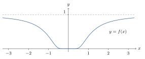
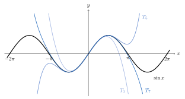

Chapter 12. Power Series Expansions
A power series is a series of functions whose terms are constant multiples of \((x-c)^k\). It is the infinite analogue of a polynomial. This chapter shows that power series behave almost as well as polynomials. Each one converges on an interval centered at \(c\), and uniformly on smaller closed intervals. Inside that interval its sum is continuous, and it can be integrated and differentiated term by term. So the theorems of Chapter 11 pay off here.
Section 12.3 turns the question around. Given a function \(f\), is it the sum of a power series? The only candidate is the Taylor series of \(f\). Taylor’s Theorem measures how far \(f\) is from the partial sums of that series. Sometimes the answer is yes, as for \(\sin x\), \(e^x\) and \(\ln(1+x)\). Sometimes it is no, even for a function with derivatives of every order. The starred Sections 12.4 and 12.5 use power series to define the trigonometric functions and the exponential function a second way.
12.1 Radius of Convergence
Definition 12.1.1. Let \(\{a_k\}\) be a sequence of real numbers, and let \(c\in\mathbb{R}\). A series of the form \[\sum^\infty_{k=0}a_k(x-c)^k=a_0+a_1(x-c)+a_2(x-c)^2+\cdots,\] is called a power series in (powers of) \((x-c)\). When \(x=c\), it is assumed \((x-c)^0=1\). When \(c=0\), the series is called a power series in \(x\). The numbers \(a_k\) are called the coefficients of the power series.
The radius of convergence is defined with a limit superior. The next lemma collects the facts about limits superior that this chapter needs. Here \(\infty\) is allowed as a value, with \(t\cdot\infty=\infty\) for \(t>0\).
Lemma 12.1.2. Let \(\{x_k\}\) and \(\{z_k\}\) be sequences of nonnegative real numbers.
If \(x_k\le z_k\) for all \(k\ge K\), for some \(K\in\mathbb{N}\), then \(\limsup x_k\le\limsup z_k\).
If \(t>0\), then \(\limsup tx_k=t\limsup x_k\).
If \(y_k\to y\) with \(0<y<\infty\), then \(\limsup x_ky_k=y\limsup x_k\).
Proof.
For \(n\ge K\), every element of \(\{x_k:k\ge n\}\) is at most the matching element of \(\{z_k:k\ge n\}\). So \(\sup\{x_k:k\ge n\}\le\sup\{z_k:k\ge n\}\). Let \(n\to\infty\).
For each \(n\), \(\sup\{tx_k:k\ge n\}=t\sup\{x_k:k\ge n\}\). Let \(n\to\infty\).
Let \(0<\varepsilon<y\). There is a \(K\in\mathbb{N}\) with \(y-\varepsilon<y_k<y+\varepsilon\) for all \(k\ge K\). Then \((y-\varepsilon)x_k\le x_ky_k\le(y+\varepsilon)x_k\) for \(k\ge K\). By (1) and (2), \[(y-\varepsilon)\limsup x_k\le\limsup x_ky_k\le(y+\varepsilon)\limsup x_k.\] If \(\limsup x_k=\infty\), the left inequality gives \(\limsup x_ky_k=\infty\). Otherwise let \(\varepsilon\to0\).
∎
Lemma 12.1.3. If \(b>0\), then \(\sqrt[k]{b}\to1\). Also \(\sqrt[k]{k}\to1\).
Proof.
Suppose \(b\ge1\), and let \(h_k=\sqrt[k]{b}-1\ge0\). By the Binomial Theorem (Exercise 9.3.3), \(b=(1+h_k)^k\ge1+kh_k\). So \(0\le h_k\le\frac{b-1}{k}\), and \(h_k\to0\) by the Squeeze Theorem. If \(0<b<1\), then \(\sqrt[k]{b}=1/\sqrt[k]{1/b}\to1\) by the first case and the limit laws.
For the second limit, let \(h_k=\sqrt[k]{k}-1\ge0\). For \(k\ge2\), the Binomial Theorem gives \(k=(1+h_k)^k\ge\binom{k}{2}h_k^2=\frac{k(k-1)}{2}h_k^2\). So \(0\le h_k\le\sqrt{\frac{2}{k-1}}\), and \(h_k\to0\).
∎
Definition 12.1.4. Given a power series \(\sum a_k(x-c)^k\), the radius of convergence \(R\) is defined as \[\frac{1}{R}=\limsup\sqrt[k]{|a_k|}.\] If \(\limsup\sqrt[k]{|a_k|}=\infty\), set \(R=0\). If \(\limsup\sqrt[k]{|a_k|}=0\), set \(R=\infty\).
If the ratios \(\frac{|a_{k+1}|}{|a_k|}\) have a limit, that limit is also \(\frac1R\), by the next theorem. This is usually the easier way to find \(R\). But the ratios do not always have a limit. See Example 12.1.9.
Theorem 12.1.5.
Let \(a_k>0\) for all \(k\in\mathbb{N}\). Then \[\liminf\frac{a_{k+1}}{a_k}\le\liminf\sqrt[k]{a_k}\le\limsup\sqrt[k]{a_k}\le\limsup\frac{a_{k+1}}{a_k}.\] In particular, if \(\frac{a_{k+1}}{a_k}\to L\), then \(\sqrt[k]{a_k}\to L\).
Proof.
The middle inequality is Theorem 3.6.10. For the right inequality, let \(\beta=\limsup\frac{a_{k+1}}{a_k}\). If \(\beta=\infty\), there is nothing to prove. Otherwise let \(c>\beta\). By Theorem 3.6.11, there is a \(K\in\mathbb{N}\) with \(a_{k+1}\le ca_k\) for all \(k\ge K\). By induction, \(a_k\le a_Kc^{k-K}\) for all \(k\ge K\). So for \(k\ge K\), \[\sqrt[k]{a_k}\le\sqrt[k]{a_Kc^{-K}}\cdot c.\] The right side tends to \(c\), by Lemma 12.1.3. So \(\limsup\sqrt[k]{a_k}\le c\), by Lemma 12.1.2 (1) and Corollary 3.6.14. Since \(c>\beta\) was arbitrary, \(\limsup\sqrt[k]{a_k}\le\beta\). The left inequality is proved the same way, with \(c<\liminf\frac{a_{k+1}}{a_k}\) and the inequalities reversed. The last statement follows from Corollary 3.6.14.
∎
Corollary 12.1.6. If \(a_k\ne0\) for all large \(k\), and \(\lim_{k\to\infty}\frac{|a_{k+1}|}{|a_k|}\) exists (as a real number or \(\infty\)), then this limit equals \(\frac1R\).
Proof.
Changing finitely many coefficients does not change \(\limsup\sqrt[k]{|a_k|}\), by Lemma 12.1.2 (1). So we may assume \(a_k\ne0\) for all \(k\). Apply Theorem 12.1.5 to \(\{|a_k|\}\). (If the limit is \(\infty\), the left inequality gives \(\liminf\sqrt[k]{|a_k|}=\infty\).)
∎
Theorem 12.1.7. Given a power series \(\sum a_k(x-c)^k\) with radius of convergence \(R\), \(0<R\le \infty\), the series
converges absolutely for all \(x\) with \(|x-c|<R\), and
diverges for all \(x\) with \(|x-c|>R\).
Furthermore, if \(0<\rho<R\), then the series converges uniformly for all \(x\) with \(|x-c|\le \rho\).
Proof.
By the root test (Theorem 10.3.4), \(\sum a_k(x-c)^k\) converges absolutely if \(\limsup\sqrt[k]{|a_k||x-c|^k}<1\). By Lemma 12.1.2 (2), this \(\limsup\) is \(|x-c|\cdot\frac1R\) when \(x\ne c\), where \(|x-c|\cdot\frac1R=0\) if \(R=\infty\). So the series converges if \(|x-c|\cdot\frac{1}{R}<1\), or if \(|x-c|<R\).
By the root test, \(\sum a_k(x-c)^k\) diverges if \(\limsup\sqrt[k]{|a_k||x-c|^k}>1\). So the series diverges if \(|x-c|\cdot\frac{1}{R}>1\), or if \(|x-c|>R\).
Suppose \(0<\rho<R\). Choose \(\beta\in(\rho,R)\). Since \[\limsup\sqrt[k]{|a_k|}=\frac{1}{R}<\frac{1}{\beta},\] there exists a \(K\in\mathbb{N}\) such that \(\sqrt[k]{|a_k|}<\frac{1}{\beta}\) for all \(k\ge K\). Hence for \(k\ge K\) and \(|x-c|\le \rho\), \[|a_k(x-c)^k|\le |a_k|\rho^k<\left(\frac{\rho}{\beta}\right)^k.\] But \(\frac{\rho}{\beta}<1\), and thus \(\sum\left(\frac{\rho}{\beta}\right)^k\) converges. Therefore, by the Weierstrass M-Test (Theorem 11.2.10), the series converges uniformly on \(|x-c|\le \rho\). To apply the M-Test, take \(M_k=|a_k|\rho^k\) for all \(k\). Then \(\sum M_k\) converges by the Comparison Test, since \(M_k<\left(\frac\rho\beta\right)^k\) for \(k\ge K\).
∎
So a power series converges on an interval centered at \(c\), called its interval of convergence. The theorem says nothing about the endpoints \(c\pm R\). As the next example shows, anything can happen there.
Example 12.1.8. The series \(\sum_{k=0}^\infty x^k\) has radius of convergence \(R=1\) and diverges when \(x=-1\) or \(x=1\).
The series \(\sum_{k=1}^\infty \frac{x^k}{k}\) has radius of convergence \(R=1\), converges when \(x=-1\) but diverges when \(x=1\).
The series \(\sum_{k=1}^\infty \frac{x^k}{k^2}\) has radius of convergence \(R=1\) and converges when \(x=-1\) or \(x=1\).
The radii follow from Lemma 12.1.3, since \(\sqrt[k]{k}\to1\) and \(\sqrt[k]{k^2}=\left(\sqrt[k]{k}\right)^2\to1\). At \(x=\pm1\), use the \(n\)th Term Test, the Alternating Series Test and Example 10.2.12.
Example 12.1.9. Consider the series \[1+2x+3^2x^2+2^3x^3+3^4x^4+\cdots=\sum^\infty_{k=0}a_k x^k,\] where \[a_k=\begin{cases} 3^k, & k\in\mathbb{E}, \\ 2^k, & k\in\mathbb{O}.\end{cases}\] So \(\limsup\sqrt[k]{|a_k|}=3\), implying \(R=\frac{1}{3}\). The series diverges at \(x=\frac{1}{3}\) and \(x=-\frac{1}{3}\). There, the terms with \(k\) even are \(1\), so the terms do not tend to \(0\). The ratios \(\frac{a_{k+1}}{a_k}\) have no limit. They tend to \(0\) along even \(k\) and to \(\infty\) along odd \(k\). So Corollary 12.1.6 does not apply here.
Example 12.1.10. The series \(\sum_{k=0}^\infty k!x^k\) has radius of convergence \(R=0\) and therefore, the power series converges only for \(x=0\). By Corollary 12.1.6, \(\frac1R=\lim_{k\to\infty}\frac{(k+1)!}{k!}=\lim_{k\to\infty}(k+1)=\infty\). For \(x\ne0\), the ratios of consecutive terms are \(\frac{|(k+1)!x^{k+1}|}{|k!x^k|}=(k+1)|x|\to\infty\), so the series diverges by Theorem 10.3.4.
Proof Technique (Finding a Radius of Convergence).
Start with the ratios \(\frac{|a_{k+1}|}{|a_k|}\). If they have a limit, it is \(\frac1R\), by Corollary 12.1.6. This works for coefficients built from factorials and powers, like \(\frac{k^2}{3^k}\) or \(\frac{k!}{k^k}\). If the ratios have no limit, use the definition, \(\frac1R=\limsup\sqrt[k]{|a_k|}\). This works for coefficients given by powers, and for coefficients that follow different rules for even and odd \(k\). If the series has gaps, like \(\sum\frac{x^{3k}}{8^k}\), many coefficients are \(0\) and the ratios are undefined. Then substitute. With \(u=x^3\), the series \(\sum\frac{u^k}{8^k}\) converges for \(|u|<8\). So the original converges for \(|x|<2\) and diverges for \(|x|>2\), and \(R=2\). Finally, the endpoints \(c\pm R\) always need separate work.
Definition 12.1.11. A function \(f(x)=\sum^\infty_{k=0}a_k(x-c)^k\) on \(|x-c|<R\) where \(R\) is the radius of convergence of \(\sum a_k(x-c)^k\) is called a real analytic function.
Remark 12.1.12. The usual definition is local. A function \(f:I\to\mathbb{R}\) on an open interval \(I\) is real analytic on \(I\) if for every \(d\in I\), \(f\) is the sum of a power series centered at \(d\) on some interval \((d-r,d+r)\subset I\). Every function in Definition 12.1.11 is analytic in this sense, but the proof is not given here. It requires rewriting a power series centered at \(c\) as one centered at \(d\).
Exercises
Exercise 12.1.1. Find the radius of convergence of the power series \(\sum^{\infty}_{k=0}\frac{1}{4^k}(x+1)^{2k}\). [Hint]
Exercise 12.1.2. Find the radius of convergence of the power series \(\sum_{k=0}^\infty \frac{1}{8^k}x^{3k}\). [Hint]
Exercise 12.1.3. Find the radius of convergence and the interval of convergence of each power series. Check the endpoints.
\(\displaystyle\sum_{k=1}^\infty\frac{k}{2^k}x^k\)
\(\displaystyle\sum_{k=0}^\infty\frac{x^k}{k!}\)
\(\displaystyle\sum_{k=1}^\infty\frac{(x-3)^k}{k\,5^k}\)
\(\displaystyle\sum_{k=1}^\infty\frac{k!}{k^k}x^k\)
Exercise 12.1.4. Complete the proof of Theorem 12.1.5 by proving the left inequality. [Hint]
12.2 Integrals and Derivatives of Power Series
Inside its interval of convergence, a power series can be treated like a polynomial. It can be integrated and differentiated term by term. At an endpoint where the series converges, Abel’s Theorem says the sum is still continuous from the inside.
Theorem 12.2.1 (Abel’s Theorem).
Suppose \(f(x)=\sum^\infty_{k=0}a_kx^k\) has radius of convergence \(R=1\), and \(\sum^\infty_{k=0} a_k\) converges. Then \[\lim_{x\to 1^-}f(x)=\sum^\infty_{k=0}a_k.\]
Proof.
The plan is to show that \(\sum a_kx^k\) converges uniformly on \([0,1]\). Then its sum is continuous on \([0,1]\), in particular at \(1\).
Let \(\varepsilon>0\). Since \(\sum a_k\) converges, the Cauchy Criterion (Theorem 10.2.1) gives an \(N\in\mathbb{N}\) such that \[\left|\sum_{k=n}^ja_k\right|<\varepsilon\quad\text{for all }j\ge n>N.\] Fix \(m\ge n>N\) and \(x\in[0,1]\). For \(j=n,\dots,m\), let \(B_j=\sum_{k=n}^ja_k\), and let \(B_{n-1}=0\). Then \(|B_j|<\varepsilon\) and \(a_k=B_k-B_{k-1}\) for \(n\le k\le m\). Summing by parts, exactly as in the proof of Theorem 10.2.15, \[\sum_{k=n}^ma_kx^k=\sum_{k=n}^m(B_k-B_{k-1})x^k=\sum_{k=n}^{m-1}B_k\left(x^k-x^{k+1}\right)+B_mx^m.\] Since \(0\le x\le1\), each \(x^k-x^{k+1}\) is nonnegative. So \[\left|\sum_{k=n}^ma_kx^k\right|\le\varepsilon\left(\sum_{k=n}^{m-1}\left(x^k-x^{k+1}\right)+x^m\right)=\varepsilon x^n\le\varepsilon.\] This holds for all \(m\ge n>N\) and all \(x\in[0,1]\). By Corollary 11.2.6, \(\sum a_kx^k\) converges uniformly on \([0,1]\). Let \(g(x)=\sum_{k=0}^\infty a_kx^k\) for \(x\in[0,1]\). Each term is continuous, so \(g\) is continuous on \([0,1]\), by Corollary 11.2.16. Since \(g=f\) on \([0,1)\) and \(g(1)=\sum_{k=0}^\infty a_k\), \[\lim_{x\to1^-}f(x)=\lim_{x\to1^-}g(x)=g(1)=\sum_{k=0}^\infty a_k.\]
∎
Example 12.2.2. Consider the series \(\sum^\infty_{k=0}(-1)^kt^k\). This series has radius of convergence \(R=1\). The series converges to \(f(t)=\frac{1}{1+t}\) for all \(t\) with \(|t|<1\). Since the convergence is uniform on \(|t|\le |x|\) when \(|x|<1\) (Theorem 12.1.7), by Corollary 11.2.19, \[\begin{aligned} \ln(1+x)&=\int^x_0\frac{1}{1+t}\,dt\\ &=\sum_{k=0}^\infty(-1)^k\int^x_0 t^k\, dt\\ &=\sum^\infty_{k=0}\frac{(-1)^k}{k+1}x^{k+1}\\ &=\sum^\infty_{k=1}\frac{(-1)^{k+1}}{k}x^k, \end{aligned}\] for all \(x\) with \(|x|<1\). The first equality holds because both sides are \(0\) at \(x=0\) and have derivative \(\frac{1}{1+x}\), by Theorem 9.4.4 and Theorem 9.3.7. When \(x<0\), \(\int_0^x\) means \(-\int_x^0\). The series \(\sum^\infty_{k=1}\frac{(-1)^{k+1}}{k}x^k\) has radius of convergence \(R=1\) and also converges when \(x=1\). Thus by Abel’s Theorem, and since \(\ln\) is continuous at \(2\), \[\ln 2=\sum^\infty_{k=1}\frac{(-1)^{k+1}}{k}=1-\frac{1}{2}+\frac{1}{3}-\frac{1}{4}+\cdots.\] So the sum \(s\) in Example 10.3.7 is \(\ln2\).
Theorem 12.2.3. Suppose \(\sum^\infty_{k=0}a_k(x-c)^k\) has radius of convergence \(R>0\) and \[f(x)=\sum^\infty_{k=0}a_k(x-c)^k,\quad |x-c|<R.\] Then
\(\sum^\infty_{k=1}ka_k(x-c)^{k-1}\) has radius of convergence \(R\), and
\(f'(x)=\sum^\infty_{k=1}ka_k(x-c)^{k-1}\) for all \(x\), \(|x-c|<R\).
Proof.
Without loss of generality, take \(c=0\). Consider the differentiated series \(\sum ka_kx^{k-1}\). For \(x\ne 0\), \[\lim_{k\to\infty}\sqrt[k]{|x|^{k-1}}=\lim_{k\to\infty}\frac{|x|}{\sqrt[k]{|x|}}=|x|.\] Therefore, since \(\sqrt[k]{k}\to 1\) (Lemma 12.1.3), \[\lim_{k\to\infty}\sqrt[k]{k|x|^{k-1}}=|x|.\] Also, for \(x\ne 0\), by Lemma 12.1.2 (3), \[\begin{aligned} \limsup \sqrt[k]{|a_k|k|x|^{k-1}}&=\limsup\left(\sqrt[k]{|a_k|}\cdot\sqrt[k]{k|x|^{k-1}}\right)\\ &=|x|\limsup\sqrt[k]{|a_k|}\\ &=|x|\cdot\frac{1}{R}. \end{aligned}\] This is less than \(1\) when \(|x|<R\) and greater than \(1\) when \(|x|>R\). Thus by the Root Test (Theorem 10.3.4) the differentiated series converges for all \(|x|<R\) and diverges for all \(|x|>R\). Thus the radius of convergence of \(\sum ka_kx^{k-1}\) is \(R\).
Choose \(\rho\in(0,R)\). Then by Theorem 12.1.7, \(\sum ka_kx^{k-1}\) converges uniformly for all \(|x|\le \rho\). Thus by Theorem 11.2.22, \[f'(x)=\sum^\infty_{k=1}ka_kx^{k-1}.\] In detail, apply Theorem 11.2.22 on \([-\rho,\rho]\) to the partial sums \(S_n(x)=\sum_{k=0}^na_kx^k\). Their derivatives \(S_n'(x)=\sum_{k=1}^nka_kx^{k-1}\) converge uniformly on \([-\rho,\rho]\), and \(S_n(0)=a_0\) converges. So \(f'(x)=\lim_{n\to\infty}S_n'(x)\) for \(|x|<\rho\). Every \(x\) with \(|x|<R\) satisfies \(|x|<\rho\) for some \(\rho<R\).
∎
Corollary 12.2.4. Suppose \(\sum^\infty_{k=0}a_k(x-c)^k\) has radius of convergence \(R>0\) and \[f(x)=\sum^\infty_{k=0}a_k(x-c)^k,\quad |x-c|<R.\] Then \(f\) has derivatives of all orders in \(|x-c|<R\), and for every \(n\in\mathbb{N}\), \[f^{(n)}(x)=\sum^\infty_{k=n}\frac{k!}{(k-n)!}a_k(x-c)^{k-n}.\] In particular, \[f^{(n)}(c)=n!a_n.\]
Proof.
The formula for \(f^{(n)}\) follows by induction on \(n\). The case \(n=1\) is Theorem 12.2.3. If the formula holds for \(n\), then \(f^{(n)}\) is the sum of a power series with radius of convergence \(R\), by part (1) of that theorem applied \(n\) times. Applying the theorem to it gives the formula for \(n+1\), since \((k-n)\frac{k!}{(k-n)!}=\frac{k!}{(k-n-1)!}\). Setting \(x=c\) leaves only the term \(k=n\), which is \(n!a_n\).
∎
Definition 12.2.5. A function \(f:I\to\mathbb{R}\) defined on an open interval \(I\) is said to be infinitely differentiable on \(I\) if \(f^{(n)}(x)\) exists for all \(x\in I\) for all \(n\in\mathbb{N}\). The set of infinitely differentiable functions on an open interval \(I\) is denoted by \(C^{\infty}(I)\). Since differentiable functions are continuous, \(C^\infty(I)\) is the intersection of the sets \(C^{(n)}(I)\) of Definition 7.1.4.
Corollary 12.2.6. If \(f\) is analytic, \(f\in C^\infty(I)\), where \(I=(c-R,c+R)\) as in Definition 12.1.11.
Example 12.2.7. For \(|x|<1\), \[\frac{1}{1-x}=\sum^\infty_{k=0}x^k.\] Thus by Corollary 12.2.4, \[\frac{d^n}{dx^n}\frac{1}{1-x}=\frac{n!}{(1-x)^{n+1}}=\sum^\infty_{k=0}\frac{(k+n)!}{k!}x^k.\] For example, with \(n=1\), \(\frac{1}{(1-x)^2}=\sum_{k=0}^\infty(k+1)x^k\) for \(|x|<1\).
Corollary 12.2.8. Suppose \(\sum a_k(x-c)^k\) and \(\sum b_k(x-c)^k\) are two power series which converge for all \(|x-c|<R\) for some \(R>0\). Then \[\sum^\infty_{k=0}a_k(x-c)^k=\sum^\infty_{k=0}b_k(x-c)^k,\quad |x-c|<R,\] if and only if \(a_k=b_k\) for all \(k\in\mathbb{N}_0\).
Proof. (\(\Leftarrow\)) Clearly, if \(a_k=b_k\) for all \(k\in\mathbb{N}_0\), then the two power series are equal.
(\(\Rightarrow\)) Set \(f(x)=\sum^\infty_{k=0}a_k(x-c)^k\) and \(g(x)=\sum^\infty_{k=0}b_k(x-c)^k\). Since \(f(x)=g(x)\) for all \(x\) with \(|x-c|<R\), then \(f^{(n)}(x)=g^{(n)}(x)\) for all \(n\in\mathbb{N}_0\) and all \(x\), \(|x-c|<R\). In particular, \(f^{(n)}(c)=g^{(n)}(c)\) for all \(n\in\mathbb{N}_0\). Thus by Corollary 12.2.4, \(a_k=b_k\) for all \(k\in\mathbb{N}_0\).
∎
The next example needs one more fact about \(e^x\). It grows faster than every power of \(x\).
Lemma 12.2.9. For all \(u\ge0\) and all \(m\in\mathbb{N}_0\), \(e^u\ge\frac{u^m}{m!}\).
Proof.
Recall that \(e^u\) is increasing, \(\frac{d}{du}e^u=e^u\) and \(e^0=1\) (Theorem 9.4.6). For \(m\in\mathbb{N}_0\) and \(u\ge0\), let \(g_m(u)=e^u-\sum_{k=0}^m\frac{u^k}{k!}\). We show \(g_m(u)\ge0\) for \(u\ge0\) by induction on \(m\). First, \(g_0(u)=e^u-1\ge0\), since \(E\) is increasing. If \(g_{m-1}\ge0\) on \([0,\infty)\), then \(g_m'=g_{m-1}\ge0\) there, so \(g_m\) is increasing on \([0,\infty)\) by Theorem 7.2.7. Since \(g_m(0)=0\), \(g_m(u)\ge0\) for all \(u\ge0\). So \(e^u\ge\sum_{k=0}^m\frac{u^k}{k!}\ge\frac{u^m}{m!}\).
∎
Example 12.2.10. \(f\in C^\infty(I)\) does not imply \(f\) has a power series representation with positive radius of convergence. For example, let \(f:\mathbb{R}\to\mathbb{R}\) be defined by \[f(x)=\begin{cases}e^{-1/x^2}, & x\ne 0,\\ 0, & x=0.\end{cases}\] See Figure 12.1. First, a limit. Let \(P\) be a polynomial of degree \(d\). Then \[\lim_{x\to0}P\left(\frac1x\right)e^{-1/x^2}=0. \tag{12.2.1}\] To see this, let \(C\) be the sum of the absolute values of the coefficients of \(P\). For \(0<|x|\le1\), \(\left|P\left(\frac1x\right)\right|\le C|x|^{-d}\). By Lemma 12.2.9 with \(u=\frac1{x^2}\) and \(m=d+1\), \(e^{-1/x^2}\le(d+1)!\,x^{2d+2}\). So \(\left|P\left(\frac1x\right)e^{-1/x^2}\right|\le C(d+1)!\,|x|^{d+2}\), which tends to \(0\).
Since \[\lim_{x\to 0}e^{-1/x^2}=0,\] \(f\) is continuous at \(0\). For \(x\ne 0\), \[f'(x)=\frac{2e^{-1/x^2}}{x^3}\] and \[\begin{aligned} f'(0)&=\lim_{h\to 0}\frac{f(h)-f(0)}{h}\\ &=\lim_{h\to0}\frac{e^{-1/h^2}}{h}\\ &=0, \end{aligned}\] by (12.2.1) with \(P(t)=t\). Thus \[f'(x)=\begin{cases}\frac{2}{x^3}e^{-1/x^2}, & x\ne 0,\\ 0, & x=0.\end{cases}\]
Now assume for \(n=k\), \[f^{(k)}(x)=\begin{cases}P\left(\frac{1}{x}\right)e^{-1/x^2}, & x\ne 0,\\ 0, & x=0,\end{cases}\] where \(P\) is a polynomial of degree \(3k\). So for \(x\ne 0\), \[\begin{aligned} f^{(k+1)}(x)&=P'\left(\frac{1}{x}\right)\cdot\left(-\frac{1}{x^2}\right)e^{-1/x^2}+P\left(\frac{1}{x}\right)\cdot\frac{2}{x^3}e^{-1/x^2}\\ &=Q\left(\frac{1}{x}\right)e^{-1/x^2}, \end{aligned}\] where \[Q\left(\frac{1}{x}\right)=P'\left(\frac{1}{x}\right)\cdot\left(-\frac{1}{x^2}\right)+P\left(\frac{1}{x}\right)\cdot\frac{2}{x^3}.\] So \(Q\) is a polynomial of degree \(3(k+1)\). Indeed, \(Q(t)=-t^2P'(t)+2t^3P(t)\). Also, for \(x=0\), \[\begin{aligned} f^{(k+1)}(0)&=\lim_{h\to0}\frac{f^{(k)}(h)-f^{(k)}(0)}{h}\\ &=\lim_{h\to0}\frac{P\left(\frac{1}{h}\right)e^{-1/h^2}}{h}\\ &=0, \end{aligned}\] by (12.2.1) with the polynomial \(tP(t)\) in place of \(P\). Thus by induction, for all \(n\in\mathbb{N}_0\), \[f^{(n)}(x)=\begin{cases}P\left(\frac{1}{x}\right)e^{-1/x^2}, & x\ne 0,\\ 0, & x=0,\end{cases}\] where \(P\) is a polynomial of degree \(3n\). (For \(n=0\), \(P=1\).)
If there exists an \(R>0\) such that \[f(x)=\sum^\infty_{k=0}a_k x^k,\quad|x|<R,\] then \(n!\,a_n=f^{(n)}(0)=0\) for all \(n\in\mathbb{N}_0\), by Corollary 12.2.4. So every \(a_n=0\), and \(f(x)=0\) for \(|x|<R\). But \(f(x)>0\) for \(x\ne0\). So \(f\) cannot be written as a power series with positive radius of convergence that converges to \(f\) on an interval \((-r,r)\).

Exercises
Exercise 12.2.1. Suppose \(f(x)=\sum^{\infty}_{k=0}a_k(x-c)^k\) has radius of convergence \(R>0\). For \(|x-c|<R\), set \(F(x)=\int^{x}_{c}f(t)\,dt\). Prove that \(F(x)=\sum^{\infty}_{k=0}\frac{a_k}{k+1}(x-c)^{k+1}\), \(|x-c|<R\).
Use the fact that \(\frac{d}{dx}\arctan x=\frac{1}{1+x^2}\) to show \[\arctan x=\sum^{\infty}_{k=0}\frac{(-1)^k}{2k+1}x^{2k+1}\] for \(x\in (-1,1)\).
Use Abel’s theorem to show \(\sum^{\infty}_{k=0}\frac{(-1)^k}{2k+1}=\frac{\pi}{4}\). Then explain why the formula in (a) also holds at \(x=\pm1\).
Exercise 12.2.2. Show that \(\lim_{x\to1^-}\sum_{k=0}^\infty(-1)^kx^k\) exists, although \(\sum_{k=0}^\infty(-1)^k\) diverges. So the converse of Abel’s Theorem is false. [Hint]
Exercise 12.2.3. Find power series centered at \(0\), with their radii of convergence, for \(\frac{x}{(1-x)^2}\) and for \(\ln(1-x^2)\). [Hint]
12.3 Taylor Series
By Corollary 12.2.4, if \(f\) is the sum of a power series centered at \(c\), the coefficients must be \(a_k=\frac{f^{(k)}(c)}{k!}\). So the Taylor series below is the only power series centered at \(c\) that could converge to \(f\). Whether it does is a question about the remainder \(f-T_n(f,c)\).
Definition 12.3.1. Let \(I\) be an open interval, let \(f:I\to\mathbb{R}\), and let \(c\in I\) and \(n\in\mathbb{N}\). Suppose \(f^{(n)}(x)\) exists for all \(x\in I\). The polynomial \[T_n(f,c)(x)=\sum^n_{k=0}\frac{f^{(k)}(c)}{k!}(x-c)^k\] is the Taylor polynomial of order \(n\) of \(f\) at \(c\). If \(f\in C^\infty(I)\), the series \[T(f,c)(x)=\sum^\infty_{k=0}\frac{f^{(k)}(c)}{k!}(x-c)^k,\] is called the Taylor series of \(f\) at \(c\). If \(c=0\), the Taylor series of \(f\) is the Maclaurin series of \(f\). The Taylor polynomial \(T_1(f,c)\) is the linear approximation to \(f\) at \(c\).
Remark 12.3.2. Differentiating term by term, the \(j\)th derivative of \(\frac{(x-c)^k}{k!}\) at \(x=c\) is \(1\) if \(j=k\) and \(0\) if \(j\ne k\). So \(T_n(f,c)\) is the unique polynomial of degree at most \(n\) whose value and first \(n\) derivatives at \(c\) agree with those of \(f\).
Example 12.3.3. Consider \(\sqrt{25.7}\). Let \(f(x)=\sqrt{x}\), \(c=25\). Then \(f(25)=5\), \(f'(25)=\frac{1}{10}\) and \(f''(25)=-\frac{1}{500}\). Then \[\begin{aligned} T_2(f,25)(x)&=f(c)+f'(c)(x-c)+\frac{f''(c)}{2}(x-c)^2\\ &=5+\frac{1}{10}(x-25)-\frac{1}{1000}(x-25)^2. \end{aligned}\] So \[\begin{aligned} f(25.7)&\approx 5 +\frac{1}{10}(25.7-25)-\frac{1}{1000}(25.7-25)^2\\ &=5+\frac{7}{100}-\frac{49}{100000}\\ &=5.06951. \end{aligned}\]
Example 12.3.4. For the function \(f(x)=e^{-1/x^2}\) of Example 12.2.10, \(T_n(f,0)(x)=0\) for all \(x\in\mathbb{R}\) and for all \(n\in\mathbb{N}_0\). So \(T_n\) converges but not to \(f\).
Definition 12.3.5. Define the function \[R_n(x)=R_n(f,c)(x)=f(x)-T_n(f,c)(x)\] as the remainder or error function between \(f\) and \(T_n(f,c)\).
Theorem 12.3.6. Suppose \(f\in C^\infty(I)\) and \(c\in I\). Then for \(x\in I\), \[f(x)=\sum^\infty_{k=0}\frac{f^{(k)}(c)}{k!}(x-c)^k\] if and only if \[\lim_{n\to\infty}R_n(f,c)(x)=0.\]
Proof.
The \(n\)th partial sum of the Taylor series at \(x\) is \(T_n(f,c)(x)=f(x)-R_n(f,c)(x)\). It converges to \(f(x)\) if and only if \(R_n(f,c)(x)\to0\).
∎
Theorem 12.3.7 (Taylor’s Theorem, Lagrange’s Form of the Remainder).
Let \(I\) be an open interval, let \(f:I\to\mathbb{R}\), and let \(c\in I\) and \(n\in\mathbb{N}\). If \(f^{(n+1)}(t)\) exists for every \(t\in I\), then for any \(x\in I\), there exists a \(\xi\) between \(x\) and \(c\) such that \[R_n(x)=R_n(f,c)(x)=\frac{f^{(n+1)}(\xi)}{(n+1)!}(x-c)^{n+1}.\] Notice continuity of \(f^{(n+1)}\) is not required.
Proof.
If \(x=c\), both sides are \(0\) with \(\xi=c\). So suppose \(x\ne c\). By symmetry we may assume \(x>c\). Let \(M\) be the number with \[f(x)=T_n(f,c)(x)+M(x-c)^{n+1}.\] The goal is to show \(M=\frac{f^{(n+1)}(\xi)}{(n+1)!}\) for some \(\xi\in(c,x)\). Define \(g:I\to\mathbb{R}\) by \[g(t)=f(t)-T_n(f,c)(t)-M(t-c)^{n+1}.\] Three facts about \(g\) are needed. First, \(g(x)=0\), by the choice of \(M\). Second, \(g^{(j)}(c)=0\) for \(j=0,1,\dots,n\). This holds because \(f\) and \(T_n(f,c)\) have the same derivatives of order at most \(n\) at \(c\) (Remark 12.3.2), and every derivative of \((t-c)^{n+1}\) of order at most \(n\) is \(0\) at \(t=c\). Third, since \(T_n(f,c)\) is a polynomial of degree at most \(n\), its \((n+1)\)st derivative is \(0\). So \[g^{(n+1)}(t)=f^{(n+1)}(t)-(n+1)!\,M\quad\text{for all }t\in I.\]
Now apply Rolle’s Theorem \(n+1\) times. Let \(x_0=x\). We find points \(c<x_{n+1}<x_n<\cdots<x_1<x_0\) with \(g^{(j)}(x_j)=0\) for each \(j\). Suppose \(x_j\) has been found for some \(j\le n\). Then \(g^{(j)}(c)=0=g^{(j)}(x_j)\), and \(g^{(j)}\) is differentiable on \(I\) because \(j\le n\). So Rolle’s Theorem (Theorem 7.2.1) gives an \(x_{j+1}\in(c,x_j)\) with \(g^{(j+1)}(x_{j+1})=0\). This starts with \(j=0\), since \(g(c)=0=g(x)\).
Let \(\xi=x_{n+1}\). Then \(\xi\in(c,x)\) and \(0=g^{(n+1)}(\xi)=f^{(n+1)}(\xi)-(n+1)!\,M\). So \(M=\frac{f^{(n+1)}(\xi)}{(n+1)!}\), and \(R_n(x)=M(x-c)^{n+1}\) is the formula claimed.
∎
Proof Technique (Applying a Theorem Repeatedly).
Rolle’s Theorem turns two zeros of \(g\) into one zero of \(g'\). The proof of Taylor’s Theorem uses this \(n+1\) times. The auxiliary function \(g\) is built so that the process never stops early. It has a zero at \(x\), and \(g,g',\dots,g^{(n)}\) all vanish at \(c\). So each new zero \(x_j\) of \(g^{(j)}\), together with the zero of \(g^{(j)}\) at \(c\), gives the next one. When a single application of a theorem gives too little, look for a way to set up the next application with what the last one produced. Compare the Auxiliary Functions box in Section 7.2.
Example 12.3.8. Let \(f(x)=\sqrt{1+x}\), \(c=0\). So \(f(0)=1\), \(f'(0)=\frac{1}{2}\) and \(f''(0)=-\frac{1}{4}\). Thus \[T_2(f,0)(x)=1+\frac{1}{2}x-\frac{1}{8}x^2.\] Therefore, \[\sqrt{1+x}=1+\frac{1}{2}x-\frac{1}{8}x^2+R_2(f,0)(x).\] For \(x>0\), the Lagrange Form of the Remainder gives a \(\xi\in(0,x)\) such that \[\begin{aligned} R_2(f,0)(x)&=\frac{f'''(\xi)}{3!}x^3\\ &=\frac{1}{16}(1+\xi)^{-5/2}x^3. \end{aligned}\] Since \((1+\xi)^{-5/2}<1\) (because \(\xi>0\)), \[\left|\sqrt{1+x}-T_2(f,0)(x)\right|<\frac{1}{16}x^3.\] Let \(x=0.4\). Then \[T_2(f,0)(0.4)=1+\frac{1}{5}-\frac{1}{50}=1.18,\] and \[\left|\sqrt{1.4}-1.18\right|<\frac{1}{16}(0.4)^3=\frac{1}{250}=0.004.\] So \(\sqrt{1.4}\approx 1.18\), accurate to two decimal places.
Notice \(0<R_2(f,0)(x)<\frac{1}{16}x^3\) for \(x>0\). Thus \[1+\frac{1}{2}x-\frac{1}{8}x^2<\sqrt{1+x}<1+\frac{1}{2}x-\frac{1}{8}x^2+\frac{1}{16}x^3.\]
Theorem 12.3.9 (Integral Form of the Remainder).
Let \(I\) be an open interval, let \(f:I\to\mathbb{R}\), and let \(c\in I\) and \(n\in\mathbb{N}\). If \(f^{(n+1)}(t)\) exists for all \(t\in I\) and \(f^{(n+1)}\in\mathcal{R}_{\mathrm{loc}}(I)\), then \[R_n(x)=R_n(f,c)(x)=\frac{1}{n!}\int^x_c f^{(n+1)}(t)(x-t)^n\, dt,\quad x\in I.\]
Proof. Induct on \(n\). Suppose \(n=1\). Then, by the Fundamental Theorem of Calculus \[\begin{aligned} R_1(x)&=f(x)-f(c)-f'(c)(x-c)\\ &=\int^x_c f'(t)\, dt - f'(c)\int^x_c dt\\ &=\int^x_c[f'(t)-f'(c)]\, dt. \end{aligned}\] Using integration by parts with \(u=f'(t)-f'(c)\), \(du=f''(t)\,dt\), \(dv=dt\) and \(v=t-x\), \[\begin{aligned} R_1(x)&=\left.[f'(t)-f'(c)](t-x)\right|^x_c-\int^x_c f''(t)(t-x)\, dt\\ &=\int^x_c (x-t)f''(t)\, dt. \end{aligned}\] Now assume the result holds for \(n=k\). Suppose \(f^{(k+2)}\) exists on \(I\) and \(f^{(k+2)}\in\mathcal{R}_{\mathrm{loc}}(I)\). Then \(f^{(k+1)}\) is differentiable, hence continuous, hence in \(\mathcal{R}_{\mathrm{loc}}(I)\). So the result for \(n=k\) applies. So \[\begin{aligned} R_{k+1}(x)&=f(x)-T_{k+1}(f,c)(x)\\ &=f(x)-T_k(f,c)(x)-\frac{f^{(k+1)}(c)}{(k+1)!}(x-c)^{k+1}\\ &=R_k(x)-\frac{f^{(k+1)}(c)}{(k+1)!}(x-c)^{k+1}\\ &=\frac{1}{k!}\int^x_c (x-t)^k f^{(k+1)}(t)\, dt -\frac{1}{k!}f^{(k+1)}(c)\int^x_c (x-t)^k\, dt\\ &=\frac{1}{k!}\int^x_c [f^{(k+1)}(t)-f^{(k+1)}(c)](x-t)^k\, dt\\ &=\frac{1}{(k+1)!}\int^x_c f^{(k+2)}(t)(x-t)^{k+1}\, dt. \end{aligned}\] The fourth line uses \(\int_c^x(x-t)^k\,dt=\frac{(x-c)^{k+1}}{k+1}\). The last line is integration by parts with \(u=f^{(k+1)}(t)-f^{(k+1)}(c)\) and \(v=-\frac{(x-t)^{k+1}}{k+1}\). The boundary terms vanish, since \(u=0\) at \(t=c\) and \(v=0\) at \(t=x\). When \(x<c\), read \(\int_c^x\) as \(-\int_x^c\). The same computations hold. Thus by induction, the result holds.
∎
Corollary 12.3.10 (Cauchy’s Form of the Remainder).
Let \(I\) be an open interval, let \(f:I\to\mathbb{R}\), and let \(c\in I\) and \(n\in\mathbb{N}\). If \(f^{(n+1)}(t)\) is continuous for all \(t\in I\), then for each \(x\in I\), there exists a \(\xi\) between \(c\) and \(x\) such that \[R_n(x)=R_n(f,c)(x)=\frac{f^{(n+1)}(\xi)}{n!}(x-c)(x-\xi)^n.\]
Proof. Since \(f^{(n+1)}(t)(x-t)^n\) is continuous on the interval between \(c\) and \(x\), by the Mean Value Theorem for Integrals (Theorem 9.6.1), there exists a \(\xi\) between \(c\) and \(x\) such that \[\int^x_c f^{(n+1)}(t)(x-t)^n\,dt=(x-c)f^{(n+1)}(\xi)(x-\xi)^n.\] The result then follows from the Integral Form of the Remainder (Theorem 12.3.9).
∎
Proof Technique (Bounding a Remainder).
To show \(R_n(x)\to0\), bound the formula for \(R_n(x)\) by something that does not depend on \(\xi\), and then let \(n\to\infty\). The point \(\xi\) is not known. It depends on both \(x\) and \(n\). So the bound on \(f^{(n+1)}(\xi)\) must hold for every \(\xi\) between \(c\) and \(x\). For \(\sin x\), \(|f^{(n+1)}(\xi)|\le1\) for every \(\xi\). In Example 12.3.12, \(\frac{1}{1+\xi}\) is bounded by \(\frac{1}{1+x}\) because \(\xi>x\). A bound that is finite for each \(n\), but grows with \(n\), is not enough. If one form of the remainder gives a bound that does not tend to \(0\), try another form.
Example 12.3.11. Let \(f(x)=\sin x\), \(c=0\). Then \[f^{(n)}(x)=\begin{cases}(-1)^k\cos x, & n=2k+1,\\ (-1)^k\sin x, & n=2k.\end{cases}\] Thus \(f^{(n)}(0)=0\) for all \(n\in\mathbb{E}\) and \(f^{(n)}(0)=(-1)^k\), \(n=2k+1\), \(k\in\mathbb{N}_0\). Therefore, \[T(\sin x,0)=\sum^\infty_{k=0}\frac{(-1)^k}{(2k+1)!}x^{2k+1}.\] Notice \(R=\infty\) for this power series. Let \(x\in\mathbb{R}\). Then by Lagrange’s Form of the Remainder, there exists a \(\xi\) between \(0\) and \(x\) such that \[R_n(x)=\frac{f^{(n+1)}(\xi)}{(n+1)!}x^{n+1}.\] Since \(|f^{(n+1)}(\xi)|\le 1\), \[|R_n(x)|\le \frac{|x|^{n+1}}{(n+1)!}\to 0\] by Exercise 10.2.5. Thus \(R_n(x)\to 0\) for all \(x\in\mathbb{R}\) and so \[\sin x=\sum^\infty_{k=0}\frac{(-1)^k}{(2k+1)!}x^{2k+1},\quad x\in\mathbb{R}.\] See Figure 12.2.

Example 12.3.12. Let \(f(x)=\ln(x+1)\). Then \(f(0)=\ln(1)=0\), and so, by the Fundamental Theorem of Calculus, \[f'(x)=\frac{1}{1+x}.\] Thus for \(n\in \mathbb{N}\), \[f^{(n)}(x)=(-1)^{n+1}\frac{(n-1)!}{(1+x)^n}.\] In particular, for \(n\in \mathbb{N}\), \[f^{(n)}(0)=(-1)^{n+1}(n-1)!.\] So \[\begin{aligned} T(\ln(1+x),0)&=\sum^\infty_{n=1}\frac{(-1)^{n+1}(n-1)!}{n!}x^n\\ &=\sum^\infty_{n=1}\frac{(-1)^{n+1}}{n}x^n. \end{aligned}\] Since \(\sqrt[n]{\left|\frac{(-1)^{n+1}}{n}\right|}\to 1\), \(R=1\).
Suppose \(x\in(0,1]\). Then Lagrange’s Form of the Remainder gives a \(\xi\in(0,x)\) with \[R_n(x)=\frac{(-1)^{n}}{(n+1)(1+\xi)^{n+1}}x^{n+1}.\] Since \((1+\xi)>1\), \[|R_n(x)|\le \frac{1}{n+1}x^{n+1}\le \frac{1}{n+1}\to 0.\] So \(R_n(x)\to 0\) for all \(x\in[0,1]\).
Now suppose \(x\in(-1,0)\). By Cauchy’s Form of the Remainder, there exists a \(\xi\in (x,0)\) such that \[R_n(x)=\frac{(-1)^{n+2}}{(1+\xi)^{n+1}}(x-\xi)^nx.\] Therefore \[|R_n(x)|\le \frac{|x|}{(1+\xi)}\left[\frac{\xi-x}{1+\xi}\right]^n.\] Consider the function \(\varphi(t)\) defined on \([x,0]\) by \[\varphi(t)=\frac{t-x}{1+t}.\] Thus \[\varphi'(t)=\frac{1+x}{(1+t)^2}\ge 0\] for \(t\in[x,0]\). Therefore \[\varphi(t)\le \varphi(0)=-x=|x|,\] for all \(t\in[x,0]\). Thus since \(1+\xi>1+x>0\), \[|R_n(x)|\le \frac{|x|}{1+\xi}|x|^n\le\frac{|x|^{n+1}}{1+x}.\] Since \(|x|<1\), \(R_n(x)\to 0\). Therefore \[\ln(1+x)=\sum^\infty_{n=1}\frac{(-1)^{n+1}}{n}x^n,\quad x\in(-1,1].\] This agrees with Example 12.2.2, which found the same series by integrating term by term.
Example 12.3.13. If \(f(x)=\frac{1}{1+x}\), \[f(x)=\sum^\infty_{k=0}(-1)^k x^k,\quad x\in(-1,1).\] Notice \(f\) has a singularity at \(x=-1\), and the radius of convergence is \(R=1\), which is equal to the distance from \(c=0\) to the singularity \(x=-1\).
For \(g(x)=\frac{1}{1+x^2}\), \[g(x)=\sum^\infty_{k=0}(-1)^k x^{2k},\quad x\in(-1,1).\] Here \(R=1\) but \(g\) has no real singularities. However, \(g\) has complex singularities at \(\pm i\), and the distance in the complex plane from \(c=0\) to \(i\) is \(1\), the radius of convergence of the power series. The explanation belongs to complex analysis, where power series are studied for complex \(x\).
Exercises
Exercise 12.3.1. Without expanding the right side, find constants \(a_0\), \(a_1\), \(a_2\), \(a_3\), \(a_4\) such that \[x^4+3x^2-2x+5=a_4(x-1)^4+a_3(x-1)^3+a_2(x-1)^2+a_1(x-1)+a_0.\] [Hint]
Exercise 12.3.2. Use a third order Taylor polynomial to estimate \(\ln1.2\). Use a remainder to show this is accurate to three decimal places. [Hint]
Exercise 12.3.3. Suppose \(f(x)=\sum^{\infty}_{k=0}a_kx^k\), \(|x|<R\), where \(R>0\). Prove that \(f(x)\) is even if and only if \(a_k=0\) for all odd \(k\). [Hint]
Exercise 12.3.4. Prove that the Taylor series of \(e^x\) centered at 0, \(T(e^x,0)=\sum^{\infty}_{k=0}\frac{x^k}{k!}\), converges to \(e^x\) for all \(x\in\mathbb{R}\). [Hint]
Exercise 12.3.5. Find the Taylor series of \(\cos x\) at \(0\), and prove that it converges to \(\cos x\) for all \(x\in\mathbb{R}\). [Hint]
Exercise 12.3.6. Let \(\alpha\in\mathbb{R}\), and let \(f(x)=(1+x)^\alpha\) for \(x>-1\). Define \(\binom{\alpha}{k}=\frac{\alpha(\alpha-1)\cdots(\alpha-k+1)}{k!}\), with \(\binom{\alpha}{0}=1\).
Show that \(T(f,0)(x)=\sum_{k=0}^\infty\binom{\alpha}{k}x^k\), and that its radius of convergence is \(1\) unless \(\alpha\in\mathbb{N}_0\).
Use Cauchy’s Form of the Remainder, as in Example 12.3.12, to prove that \((1+x)^\alpha=\sum_{k=0}^\infty\binom{\alpha}{k}x^k\) for \(|x|<1\). This is the binomial series.
12.4 Trigonometric Functions from Power Series*
The functions \(\sin x\) and \(\cos x\) have been used throughout the book with their properties assumed. See Remark 3.1.1 and the introduction to Chapter 7. This section defines them and proves those properties. Section 9.5 did the same thing starting from an integral. Either section can be read without the other, and a reader willing to assume the familiar properties of \(\sin\) and \(\cos\) can skip both. The end of this section shows the two give the same functions.
Example 12.3.11 showed that if \(\sin\) has its familiar derivatives, then it equals its Taylor series. This section turns that around. The series becomes the definition. Everything else follows from the derivatives, and from one fact about the differential equation \(y''+y=0\).
Definition 12.4.1. For \(x\in\mathbb{R}\), define \[\sin x=\sum_{k=0}^\infty\frac{(-1)^k}{(2k+1)!}x^{2k+1}=x-\frac{x^3}{3!}+\frac{x^5}{5!}-\cdots\] and \[\cos x=\sum_{k=0}^\infty\frac{(-1)^k}{(2k)!}x^{2k}=1-\frac{x^2}{2!}+\frac{x^4}{4!}-\cdots.\] These are the sine and cosine functions.
Remark 12.4.2. Here \(\sin\) and \(\cos\) are names of functions, just as \(f\) is, and \(\sin x\) and \(\cos x\) are their values at \(x\), just as \(f(x)\) is. By tradition the parentheses are usually left off, so \(\sin x\) means \(\sin(x)\). Writing \(\sin\) alone, as in “\(\sin'=\cos\),” refers to the whole function. Parentheses are used when the input is more than a single symbol, as in \(\sin(x+y)\). Also by tradition, \(\sin^2x\) means \((\sin x)^2\), not \(\sin(\sin x)\). The same conventions hold for \(\tan\) and \(\arctan\).
Both series converge for every \(x\). Each term has absolute value at most \(\frac{|x|^n}{n!}\) for some \(n\), with each \(n\) used once. The series \(\sum\frac{|x|^n}{n!}\) converges by the Ratio Test (Theorem 10.2.13), since \(\frac{|x|^{n+1}/(n+1)!}{|x|^n/n!}=\frac{|x|}{n+1}\to0\). So both series converge absolutely by the Comparison Test (Theorem 10.2.7). A power series that converges everywhere has radius of convergence \(\infty\), by Theorem 12.1.7 (2).
Theorem 12.4.3. The functions \(\sin\) and \(\cos\) are differentiable on \(\mathbb{R}\), and \[\frac{d}{dx}\sin x=\cos x\quad\text{and}\quad\frac{d}{dx}\cos x=-\sin x.\] Also \(\sin0=0\), \(\cos0=1\), \(\sin(-x)=-\sin x\) and \(\cos(-x)=\cos x\) for all \(x\in\mathbb{R}\).
Proof.
By Theorem 12.2.3, the series can be differentiated term by term. For \(\sin\), \[\frac{d}{dx}\sin x=\sum_{k=0}^\infty\frac{(-1)^k(2k+1)}{(2k+1)!}x^{2k}=\sum_{k=0}^\infty\frac{(-1)^k}{(2k)!}x^{2k}=\cos x.\] For \(\cos\), the term with \(k=0\) is constant, so \[\begin{aligned} \frac{d}{dx}\cos x&=\sum_{k=1}^\infty\frac{(-1)^k(2k)}{(2k)!}x^{2k-1}=\sum_{k=1}^\infty\frac{(-1)^k}{(2k-1)!}x^{2k-1}\\ &=-\sum_{j=0}^\infty\frac{(-1)^j}{(2j+1)!}x^{2j+1}=-\sin x, \end{aligned}\] where \(j=k-1\). Setting \(x=0\) in the series gives \(\sin0=0\) and \(\cos0=1\). The series for \(\sin\) has only odd powers and the series for \(\cos\) has only even powers. So \(\sin(-x)=-\sin x\) and \(\cos(-x)=\cos x\).
∎
So \(\sin''=-\sin\) and \(\cos''=-\cos\). Both functions solve the differential equation \(y''+y=0\). The next lemma says a solution of this equation is determined by its value and its derivative at \(0\). It is the key to every identity in this section.
Lemma 12.4.4. Let \(y:\mathbb{R}\to\mathbb{R}\) be twice differentiable with \(y''+y=0\) on \(\mathbb{R}\). If \(y(0)=0\) and \(y'(0)=0\), then \(y(x)=0\) for all \(x\in\mathbb{R}\).
Proof.
Let \(E(x)=y(x)^2+y'(x)^2\). Then \[E'(x)=2y(x)y'(x)+2y'(x)y''(x)=2y'(x)\bigl(y(x)+y''(x)\bigr)=0.\] By Theorem 7.2.7 (5), \(E\) is constant. Since \(E(0)=0\), \(E(x)=0\) for all \(x\). A sum of two squares is \(0\) only when both are \(0\). So \(y(x)=0\).
∎
Theorem 12.4.5. Let \(y:\mathbb{R}\to\mathbb{R}\) be twice differentiable with \(y''+y=0\) on \(\mathbb{R}\). Then \[y(x)=y(0)\cos x+y'(0)\sin x\] for all \(x\in\mathbb{R}\).
Proof.
Let \(z(x)=y(x)-y(0)\cos x-y'(0)\sin x\). By Theorem 12.4.3, \(z''=-z\), so \(z''+z=0\). Also \(z(0)=y(0)-y(0)=0\) and \(z'(0)=y'(0)-y'(0)=0\). By Lemma 12.4.4, \(z=0\).
∎
Theorem 12.4.6. For all \(x,y\in\mathbb{R}\),
\(\sin^2x+\cos^2x=1\), so \(|\sin x|\le1\) and \(|\cos x|\le1\),
\(\sin(x+y)=\sin x\cos y+\cos x\sin y\), and
\(\cos(x+y)=\cos x\cos y-\sin x\sin y\).
Proof.
(1) Let \(E(x)=\sin^2x+\cos^2x\). By Theorem 12.4.3, \(E'(x)=2\sin x\cos x-2\cos x\sin x=0\). So \(E\) is constant, and \(E(x)=E(0)=1\).
(2) Fix \(y\), and let \(f(x)=\sin(x+y)\). By the Chain Rule, \(f'(x)=\cos(x+y)\) and \(f''(x)=-\sin(x+y)=-f(x)\). Also \(f(0)=\sin y\) and \(f'(0)=\cos y\). By Theorem 12.4.5, \(f(x)=\sin y\cos x+\cos y\sin x\).
(3) Fix \(y\), and let \(g(x)=\cos(x+y)\). Then \(g''=-g\), \(g(0)=\cos y\) and \(g'(0)=-\sin y\). By Theorem 12.4.5, \(g(x)=\cos y\cos x-\sin y\sin x\).
∎
Corollary 12.4.7. For all \(x,y\in\mathbb{R}\),
\(\sin2x=2\sin x\cos x\) and \(\cos2x=\cos^2x-\sin^2x=1-2\sin^2x\),
\(\sin x\sin y=\frac12\bigl[\cos(x-y)-\cos(x+y)\bigr]\),
\(\cos x\cos y=\frac12\bigl[\cos(x-y)+\cos(x+y)\bigr]\) and \(\sin x\cos y=\frac12\bigl[\sin(x+y)+\sin(x-y)\bigr]\), and
\(\sin x-\sin y=2\cos\frac{x+y}2\sin\frac{x-y}2\).
Proof.
(1) Take \(y=x\) in Theorem 12.4.6, and use \(\cos^2x=1-\sin^2x\).
(2) and (3) By Theorems 12.4.6 and 12.4.3, \(\cos(x-y)=\cos x\cos y+\sin x\sin y\) and \(\sin(x-y)=\sin x\cos y-\cos x\sin y\). Add or subtract these and the formulas for \(\cos(x+y)\) and \(\sin(x+y)\).
(4) Let \(u=\frac{x+y}2\) and \(v=\frac{x-y}2\). Then \(x=u+v\) and \(y=u-v\). By (3), \(\sin x-\sin y=\sin(u+v)-\sin(u-v)=2\cos u\sin v\).
∎
These are the identities used in Example 6.4.3, Theorem 10.2.21 and Example 11.3.1.
Next comes \(\pi\). The plan is to find the first positive zero of \(\cos\). To locate it, compare \(\sin\) and \(\cos\) with their Taylor polynomials.
Lemma 12.4.8. For all \(x\ge0\),
\(x-\frac{x^3}{6}\le\sin x\le x\), and
\(1-\frac{x^2}2+\frac{x^4}{24}-\frac{x^6}{720}\le\cos x\le1-\frac{x^2}2+\frac{x^4}{24}\).
Proof.
Each inequality has the form \(f(x)\ge0\), where \(f(0)=0\) and \(f'\) is the function in the previous inequality. If \(f'\ge0\) on \([0,\infty)\) and \(f(0)=0\), then \(f\ge0\) on \([0,\infty)\) by Theorem 7.2.7. Start with \(1-\cos x\ge0\), which holds by Theorem 12.4.6 (1). Then, in order, \[\begin{aligned} f_1(x)&=x-\sin x, & f_1'(x)&=1-\cos x\ge0,\\ f_2(x)&=\cos x-1+\tfrac{x^2}2, & f_2'(x)&=f_1(x)\ge0,\\ f_3(x)&=\sin x-x+\tfrac{x^3}6, & f_3'(x)&=f_2(x)\ge0,\\ f_4(x)&=1-\tfrac{x^2}2+\tfrac{x^4}{24}-\cos x, & f_4'(x)&=f_3(x)\ge0,\\ f_5(x)&=x-\tfrac{x^3}6+\tfrac{x^5}{120}-\sin x, & f_5'(x)&=f_4(x)\ge0,\\ f_6(x)&=\cos x-1+\tfrac{x^2}2-\tfrac{x^4}{24}+\tfrac{x^6}{720}, & f_6'(x)&=f_5(x)\ge0. \end{aligned}\] Each \(f_j\) is \(0\) at \(0\). So \(f_j\ge0\) on \([0,\infty)\) for each \(j\). Now \(f_1,f_3\ge0\) give (1), and \(f_4,f_6\ge0\) give (2).
∎
Theorem 12.4.9. There is a number \(x_0\in\left(\frac32,2\right)\) with \(\cos x_0=0\) and \(\cos x>0\) for \(0\le x<x_0\).
Proof.
By Lemma 12.4.8 (2), \(\cos2\le1-2+\frac{16}{24}=-\frac13<0\). Let \(p(x)=1-\frac{x^2}2+\frac{x^4}{24}-\frac{x^6}{720}\). For \(0<x\le\frac32\), \(x^2<6\), so \[p'(x)=-x+\frac{x^3}6-\frac{x^5}{120}=-x\left(1-\frac{x^2}6\right)-\frac{x^5}{120}<0.\] So \(p\) is decreasing on \(\left[0,\frac32\right]\), and for \(0\le x\le\frac32\), \[\cos x\ge p(x)\ge p\left(\tfrac32\right)=1-\frac98+\frac{81}{384}-\frac{729}{46080}>0.\] (The value is about \(0.07\).) Let \(Z=\{x\in[0,2]:\cos x=0\}\). Since \(\cos\frac32>0>\cos2\), \(Z\) is not empty by Theorem 6.3.10. Let \(x_0=\inf Z\). Since \(\cos>0\) on \(\left[0,\frac32\right]\), \(x_0\ge\frac32\). For each \(n\in\mathbb{N}\) there is a \(z_n\in Z\) with \(x_0\le z_n<x_0+\frac1n\). Then \(z_n\to x_0\), and \(\cos x_0=\lim\cos z_n=0\) by Theorem 6.3.9. So \(x_0\in Z\), and \(x_0\ne\frac32\) and \(x_0\ne2\). Finally, \(\cos x\ne0\) for \(0\le x<x_0\). If \(\cos x<0\) for such an \(x\), then \(\cos\) would have a zero in \((0,x)\) by Theorem 6.3.10, which is smaller than \(x_0\). So \(\cos x>0\) for \(0\le x<x_0\).
∎
Definition 12.4.10. Define \(\pi=2x_0\), where \(x_0\) is the number in Theorem 12.4.9. So \(\pi\) is twice the smallest positive zero of \(\cos\), and \(3<\pi<4\).
Theorem 12.4.11.
\(\cos\frac\pi2=0\), \(\sin\frac\pi2=1\), \(\cos\pi=-1\) and \(\sin\pi=0\).
\(\sin\left(x+\frac\pi2\right)=\cos x\) and \(\cos\left(x+\frac\pi2\right)=-\sin x\) for all \(x\in\mathbb{R}\).
\(\sin(x+\pi)=-\sin x\) and \(\cos(x+\pi)=-\cos x\) for all \(x\in\mathbb{R}\).
\(\sin(x+2\pi)=\sin x\) and \(\cos(x+2\pi)=\cos x\) for all \(x\in\mathbb{R}\).
\(\sin x>0\) for \(0<x<\pi\).
\(\sin x=0\) exactly when \(x=k\pi\) for some \(k\in\mathbb{Z}\), and \(\cos x=0\) exactly when \(x=\frac\pi2+k\pi\) for some \(k\in\mathbb{Z}\).
Proof.
(1) By definition, \(\cos\frac\pi2=0\). On \(\left[0,\frac\pi2\right)\), \(\sin'=\cos>0\). So \(\sin\) is strictly increasing on \(\left[0,\frac\pi2\right]\) by Theorem 7.2.7, and \(\sin\frac\pi2>\sin0=0\). Since \(\sin^2\frac\pi2=1-\cos^2\frac\pi2=1\), \(\sin\frac\pi2=1\). By Corollary 12.4.7 (1), \(\cos\pi=1-2\sin^2\frac\pi2=-1\) and \(\sin\pi=2\sin\frac\pi2\cos\frac\pi2=0\).
(2) By Theorem 12.4.6 and (1), \(\sin\left(x+\frac\pi2\right)=\sin x\cdot0+\cos x\cdot1=\cos x\) and \(\cos\left(x+\frac\pi2\right)=\cos x\cdot0-\sin x\cdot1=-\sin x\).
(3) Apply (2) twice. Then \(\sin(x+\pi)=\cos\left(x+\frac\pi2\right)=-\sin x\) and \(\cos(x+\pi)=-\sin\left(x+\frac\pi2\right)=-\cos x\).
(4) Apply (3) twice.
(5) If \(0<x\le\frac\pi2\), then \(\sin x>0\) by the proof of (1). If \(\frac\pi2<x<\pi\), then \(0<\pi-x<\frac\pi2\). By (3) and Theorem 12.4.3, \(\sin x=-\sin(x-\pi)=\sin(\pi-x)>0\).
(6) By (1) and (3), \(\sin(k\pi)=\pm\sin0=0\) for all \(k\in\mathbb{Z}\). Conversely, suppose \(\sin x=0\). Let \(k\) be the integer with \(k\pi\le x<(k+1)\pi\), and let \(t=x-k\pi\in[0,\pi)\). By (3), \(\sin t=\pm\sin x=0\). By (5), \(t=0\). So \(x=k\pi\). By (2), \(\cos x=\sin\left(x+\frac\pi2\right)\). So \(\cos x=0\) exactly when \(x+\frac\pi2=m\pi\) for some \(m\in\mathbb{Z}\), that is, when \(x=\frac\pi2+(m-1)\pi\).
∎
This \(\pi\) is the familiar one. The point \((\cos t,\sin t)\) lies on the unit circle, by Theorem 12.4.6 (1). As \(t\) goes from \(0\) to \(2\pi\), it goes around the circle once, starting and ending at \((1,0)\). See Exercise 12.4.7. Its velocity \((-\sin t,\cos t)\) has length \(1\). So the arc of the circle from \((1,0)\) to \((\cos t,\sin t)\) has length \(t\), and the whole circle has length \(2\pi\). Arc length is not developed in this book, so this is only a remark. But it explains why the functions defined here are the sine and cosine of trigonometry, measured in radians.
Two limits from Chapter 6 now come for free. By Theorem 12.4.3, \[\lim_{x\to0}\frac{\sin x}x=\lim_{x\to0}\frac{\sin x-\sin0}{x-0}=\cos0=1 \quad\text{and}\quad \lim_{x\to0}\frac{\cos x-1}x=-\sin0=0.\] Compare Exercise 6.1.7, which uses a geometric inequality instead.
Definition 12.4.12. For \(x\ne\frac\pi2+k\pi\), \(k\in\mathbb{Z}\), define \(\tan x=\frac{\sin x}{\cos x}\).
Theorem 12.4.13.
\(\frac{d}{dx}\tan x=\frac1{\cos^2x}=1+\tan^2x\) wherever \(\tan\) is defined.
\(\tan\) is strictly increasing on \(\left(-\frac\pi2,\frac\pi2\right)\) and maps it onto \(\mathbb{R}\).
The inverse \(\arctan:\mathbb{R}\to\left(-\frac\pi2,\frac\pi2\right)\) is differentiable, and \(\frac{d}{dx}\arctan x=\frac1{1+x^2}\).
\(\arctan x=\int_0^x\frac{dt}{1+t^2}\) for all \(x\in\mathbb{R}\). In particular, \(\pi=4\int_0^1\frac{dt}{1+t^2}\).
Proof.
(1) By the Quotient Rule (Theorem 7.1.5) and Theorem 12.4.6 (1), \[\frac{d}{dx}\tan x=\frac{\cos x\cos x-\sin x(-\sin x)}{\cos^2x}=\frac1{\cos^2x}=\frac{\cos^2x+\sin^2x}{\cos^2x}=1+\tan^2x.\]
(2) By (1), \(\tan'>0\) on \(\left(-\frac\pi2,\frac\pi2\right)\). So \(\tan\) is strictly increasing there by Theorem 7.2.7. As \(x\to\frac\pi2^-\), \(\sin x\to1\) and \(\cos x\to0\) with \(\cos x>0\). So \(\tan x\to\infty\). Since \(\tan(-x)=-\tan x\), \(\tan x\to-\infty\) as \(x\to-\frac\pi2^+\). Given \(y\in\mathbb{R}\), choose \(a<b\) in \(\left(-\frac\pi2,\frac\pi2\right)\) with \(\tan a<y<\tan b\). By Theorem 6.3.10, \(\tan c=y\) for some \(c\in(a,b)\). So \(\tan\) maps \(\left(-\frac\pi2,\frac\pi2\right)\) onto \(\mathbb{R}\).
(3) By Theorem 7.2.9, \(\arctan\) is differentiable on \(\mathbb{R}\). If \(y=\tan x\) with \(|x|<\frac\pi2\), then \[\arctan'(y)=\frac1{\tan'(x)}=\frac1{1+\tan^2x}=\frac1{1+y^2}.\]
(4) Let \(F(x)=\int_0^x\frac{dt}{1+t^2}\). By Theorem 9.3.7, \(F'(x)=\frac1{1+x^2}=\arctan'(x)\). So \(F-\arctan\) is constant by Theorem 7.2.7 (5). Both are \(0\) at \(0\). So \(F=\arctan\). Last, \(\cos^2\frac\pi4-\sin^2\frac\pi4=\cos\frac\pi2=0\) by Corollary 12.4.7 (1), and both \(\sin\frac\pi4\) and \(\cos\frac\pi4\) are positive. So \(\sin\frac\pi4=\cos\frac\pi4\), \(\tan\frac\pi4=1\) and \(\arctan1=\frac\pi4\).
∎
The inverse cosine was found in Example 7.2.10, and the inverse sine is Exercise 12.4.4.
The functions of this section are the ones built in Section 9.5. Write \(S\) and \(C\) for the sine and cosine of that section. By Theorem 9.5.10, \(S''+S=0\), \(S(0)=0\) and \(S'(0)=C(0)=1\). So \(S=\sin\) by Theorem 12.4.5. In the same way, \(C=\cos\). In Section 9.5, \(\pi\) was defined as \(2\sup\arctan\), and Theorem 9.5.11 (4) shows that \(\frac\pi2\) is the smallest positive zero of \(C\). So the two definitions of \(\pi\) agree. By Theorem 12.4.13 (4), the two definitions of \(\arctan\) agree too.
Exercises
Exercise 12.4.1. Prove that \(\sin^2x=\frac{1-\cos2x}2\) and \(\cos^2x=\frac{1+\cos2x}2\) for all \(x\in\mathbb{R}\). Then prove that \(\sin3x=3\sin x-4\sin^3x\). [Hint]
Exercise 12.4.2. Prove that \(\sin\frac\pi4=\cos\frac\pi4=\frac{\sqrt2}2\), \(\sin\frac\pi6=\frac12\) and \(\cos\frac\pi6=\frac{\sqrt3}2\). [Solution]
Exercise 12.4.3. Prove that \(\tan(x+y)=\frac{\tan x+\tan y}{1-\tan x\tan y}\) whenever \(\tan x\), \(\tan y\) and \(\tan(x+y)\) are defined and \(\tan x\tan y\ne1\). [Hint]
Exercise 12.4.4. Prove that \(\sin\) is strictly increasing on \(\left[-\frac\pi2,\frac\pi2\right]\) and maps it onto \([-1,1]\). Let \(\arcsin:[-1,1]\to\left[-\frac\pi2,\frac\pi2\right]\) be the inverse. Prove that \(\frac{d}{dx}\arcsin x=\frac1{\sqrt{1-x^2}}\) for \(-1<x<1\), and that \(\arcsin x+\arccos x=\frac\pi2\) for \(-1\le x\le1\), where \(\arccos\) is as in Example 7.2.10. [Solution]
Exercise 12.4.5. Let \(\omega>0\), and let \(y:\mathbb{R}\to\mathbb{R}\) be twice differentiable with \(y''+\omega^2y=0\) on \(\mathbb{R}\). Prove that \(y(x)=y(0)\cos\omega x+\frac{y'(0)}\omega\sin\omega x\) for all \(x\in\mathbb{R}\). [Solution]
Exercise 12.4.6. Suppose \(p\in\mathbb{R}\) and \(\sin(x+p)=\sin x\) for all \(x\in\mathbb{R}\). Prove that \(p=2k\pi\) for some \(k\in\mathbb{Z}\). [Hint]
Exercise 12.4.7. Let \(a,b\in\mathbb{R}\) with \(a^2+b^2=1\). Prove that there is exactly one \(t\in[0,2\pi)\) with \(\cos t=a\) and \(\sin t=b\). [Solution]
Exercise 12.4.8. Use Lemma 12.4.8 to prove that \(3.1<\pi<3.2\). [Hint]
Exercise 12.4.9. Prove that \(\arctan x=\sum_{k=0}^\infty\frac{(-1)^k}{2k+1}x^{2k+1}\) for \(|x|<1\). Then use Theorem 12.2.1 to prove that \[\frac\pi4=1-\frac13+\frac15-\frac17+\cdots.\] [Hint]
Exercise 12.4.10. Prove that \(\sin\) is not a polynomial. [Hint]
12.5 The Exponential Function from Its Series*
Section 9.4 defined \(\ln\) as an integral and \(e^x\) as its inverse. This section goes the other way. It defines \(e^x\) by its power series and gets \(\ln\) as the inverse. It can be read without Section 9.4. At the end, the two approaches are shown to give the same functions. A reader willing to assume the familiar properties of \(e^x\) and \(\ln x\) can skip both sections.
Definition 12.5.1. For \(x\in\mathbb{R}\), define \[E(x)=\sum_{k=0}^\infty\frac{x^k}{k!}=1+x+\frac{x^2}{2!}+\frac{x^3}{3!}+\cdots.\]
The series converges for every \(x\). For \(x\ne0\), the ratio of consecutive terms is \(\frac{|x|}{k+1}\to0\), so it converges absolutely by the Ratio Test (Theorem 10.2.13). So its radius of convergence is \(\infty\), by Theorem 12.1.7 (2).
Theorem 12.5.2.
\(E\) is differentiable on \(\mathbb{R}\), \(E'=E\) and \(E(0)=1\).
\(E(x)E(-x)=1\) for all \(x\in\mathbb{R}\).
\(E(x+y)=E(x)E(y)\) for all \(x,y\in\mathbb{R}\).
\(E(x)>0\) for all \(x\), and \(E(x)\ge1+x\) for all \(x\ge0\).
\(E\) is strictly increasing, \(\lim_{x\to\infty}E(x)=\infty\) and \(\lim_{x\to-\infty}E(x)=0\).
\(E\) maps \(\mathbb{R}\) onto \((0,\infty)\).
Proof.
(1) By Theorem 12.2.3, \[E'(x)=\sum_{k=1}^\infty\frac{kx^{k-1}}{k!}=\sum_{k=1}^\infty\frac{x^{k-1}}{(k-1)!}=\sum_{j=0}^\infty\frac{x^j}{j!}=E(x).\] Setting \(x=0\) leaves only the first term, so \(E(0)=1\).
(2) Let \(g(x)=E(x)E(-x)\). By the Product Rule and the Chain Rule, \(g'(x)=E(x)E(-x)-E(x)E(-x)=0\). So \(g\) is constant by Theorem 7.2.7, and \(g(x)=g(0)=1\).
(3) Fix \(y\), and let \(h(x)=E(x+y)E(-x)\). Then \(h'(x)=E(x+y)E(-x)-E(x+y)E(-x)=0\). So \(h(x)=h(0)=E(y)\). Multiply \(E(x+y)E(-x)=E(y)\) by \(E(x)\) and use (2).
(4) If \(x\ge0\), every term of the series is at least \(0\), so \(E(x)\ge1+x\ge1\). If \(x<0\), then \(E(x)=\frac1{E(-x)}>0\) by (2).
(5) Since \(E'=E>0\), \(E\) is strictly increasing by Theorem 7.2.7. Since \(E(x)\ge1+x\) for \(x\ge0\), \(E(x)\to\infty\) as \(x\to\infty\). Then \(E(x)=\frac1{E(-x)}\to0\) as \(x\to-\infty\).
(6) Let \(y>0\). By (5), there are \(a<b\) with \(E(a)<y<E(b)\). Since \(E\) is continuous, Theorem 6.3.10 gives a \(c\) with \(E(c)=y\).
∎
Definition 12.5.3. Let \(e=E(1)\). Let \(L:(0,\infty)\to\mathbb{R}\) be the inverse of \(E\).
Remark 12.5.4. Here \(E\) and \(L\) are names of functions, just as \(f\) is, and \(E(x)\) and \(L(x)\) are their values. The traditional names for these functions are \(\exp\) and \(\ln\). By custom \(\ln\) is written without parentheses, so \(\ln x\) means \(\ln(x)\), and \(\ln\) alone, as in “\(\ln\) is increasing,” refers to the whole function. Parentheses are used when the input is more than a single symbol, as in \(\ln(1+x)\).
Theorem 12.5.5.
\(L\) is differentiable, \(L'(x)=\frac1x\) and \(L(1)=0\). So \(L(x)=\int_1^x\frac1t\,dt\) for all \(x>0\).
\(L(ab)=L(a)+L(b)\) for all \(a,b>0\).
\(E(r)=e^r\) for all \(r\in\mathbb{Q}\).
\(e=\lim_{n\to\infty}\left(1+\frac1n\right)^n\).
Proof.
(1) By Theorem 7.2.9, \(L\) is differentiable on \((0,\infty)\). If \(x=E(y)\), then \(L'(x)=\frac1{E'(y)}=\frac1{E(y)}=\frac1x\). Since \(E(0)=1\), \(L(1)=0\). The function \(\int_1^x\frac1t\,dt\) also has derivative \(\frac1x\) and is \(0\) at \(1\), by Theorem 9.3.7. So the two are equal by Theorem 7.2.7 (5).
(2) Let \(a=E(s)\) and \(b=E(t)\). Then \(ab=E(s+t)\) by Theorem 12.5.2 (3). So \(L(ab)=s+t=L(a)+L(b)\).
(3) By (3) of Theorem 12.5.2 and induction, \(E(nx)=E(x)^n\) for \(n\in\mathbb{N}\). So \(E(n)=e^n\), and \(E(-n)=\frac1{E(n)}=e^{-n}\). Let \(r=\frac mn\) with \(m\in\mathbb{Z}\) and \(n\in\mathbb{N}\). Then \(E(r)^n=E(m)=e^m\). Since \(E(r)>0\), it is the positive \(n\)th root of \(e^m\), which is \(e^{m/n}\) by Theorem 1.7.13.
(4) By (2) and induction, \(L(b^n)=nL(b)\) for \(b>0\) and \(n\in\mathbb{N}\). So \(\left(1+\frac1n\right)^n=E\left(nL\left(1+\frac1n\right)\right)\). Since \(L'(1)=1\), Theorem 6.1.18 with \(x_n=1+\frac1n\) gives \[nL\left(1+\frac1n\right)=\frac{L\left(1+\frac1n\right)-L(1)}{1/n}\to1.\] Since \(E\) is continuous, \(\left(1+\frac1n\right)^n\to E(1)=e\) by Theorem 6.3.9.
∎
Part (1) says \(L\) is the function \(\ln x=\int_1^x\frac1t\,dt\) of Section 9.4. Part (4) says \(e\) is the number \(e\) defined in Example 9.4.1. So \(E\), the inverse of \(L\), is the function \(\exp\) of Definition 9.4.5, and \(e^x=\exp(x)=E(x)\). The two approaches give the same functions. A reader of this section can go on to Definition 9.4.7 to define \(a^x\) and \(\log_a\). The facts used there from Theorems 9.4.4 and 9.4.6 follow from Theorems 12.5.2 and 12.5.5 in the same way.
The proof of (3) in Theorem 12.5.2 is the same trick as Lemma 12.4.4. A function is pinned down by a differential equation and one value. See Exercise 9.4.4.
Remark 12.5.6. Compare the three series \[E(x)=\sum_{k=0}^\infty\frac{x^k}{k!},\qquad\cos x=\sum_{k=0}^\infty\frac{(-1)^kx^{2k}}{(2k)!},\qquad\sin x=\sum_{k=0}^\infty\frac{(-1)^kx^{2k+1}}{(2k+1)!}.\] The series for \(\cos\) and \(\sin\) are the even and odd parts of the series for \(E\), with alternating signs. Without the signs, the even and odd parts give the hyperbolic functions \(\cosh x\) and \(\sinh x\) (Exercise 12.5.4). The signs come from powers of \(i=\sqrt{-1}\), since \(i^2=-1\), \(i^3=-i\) and \(i^4=1\). If complex numbers are allowed in the series, then \[E(ix)=\cos x+i\sin x.\] This is Euler’s formula. Making it precise requires series of complex numbers, which belong to complex analysis. This book stays with real numbers.
Exercises
Exercise 12.5.1. Let \(x\ge0\) and \(n\in\mathbb{N}_0\). Prove that \(E(x)\ge\sum_{k=0}^n\frac{x^k}{k!}\). Use this to prove that \(\lim_{x\to\infty}\frac{x^n}{E(x)}=0\). [Hint]
Exercise 12.5.2. Prove that \(0<e-\sum_{k=0}^n\frac1{k!}<\frac1{n!\,n}\) for all \(n\in\mathbb{N}\). Use \(n=7\) to prove that \(2.718<e<2.719\). [Solution]
Exercise 12.5.3. Prove that \(e\) is irrational. (Suppose \(e=\frac pq\) with \(p,q\in\mathbb{N}\). Multiply the inequality of Exercise 12.5.2 with \(n=q\) by \(q!\).) [Solution]
Exercise 12.5.4. Let \(\cosh x=\frac{E(x)+E(-x)}2\) and \(\sinh x=\frac{E(x)-E(-x)}2\). Prove that \(\cosh x=\sum_{k=0}^\infty\frac{x^{2k}}{(2k)!}\) and \(\sinh x=\sum_{k=0}^\infty\frac{x^{2k+1}}{(2k+1)!}\). [Hint]
Exercise 12.5.5. Let \(x\ge0\). Use the Binomial Theorem to prove that \(\left(1+\frac xn\right)^n\le E(x)\) for all \(n\in\mathbb{N}\). [Hint]
Notes
Brook Taylor published the series that bears his name in 1715 [71]. Colin Maclaurin used the special case \(c=0\) in 1742 [52]. Joseph-Louis Lagrange gave his form of the remainder in 1797 [40]. Cauchy gave his form in 1823, along with the function of Example 12.2.10, which shows that a Taylor series can converge to the wrong function [16]. Cauchy stated the formula \(\frac1R=\limsup\sqrt[k]{|a_k|}\) in his Cours d’analyse [15]. Jacques Hadamard rediscovered it and made it widely known in 1892 [34], and it is now called the Cauchy–Hadamard formula. Abel proved Theorem 12.2.1 in 1826, in the same paper that first proved the binomial series of Exercise 12.3.6 converges [1]. Nicholas Mercator published the series for \(\ln(1+x)\) in 1668 [53]. Gottfried Wilhelm Leibniz published the series \(\frac\pi4=1-\frac13+\frac15-\cdots\) in 1682 [44]. Madhava of Sangamagrama had found it around 1400. Madhava also knew the series for \(\sin x\) and \(\cos x\). Isaac Newton found them again in 1669. Leonhard Euler made \(\sin\) and \(\cos\) functions of a real variable in his Introductio in analysin infinitorum of 1748. Defining them by their series, as in Section 12.4, makes them part of analysis instead of geometry.